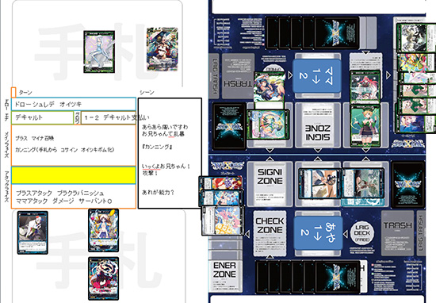
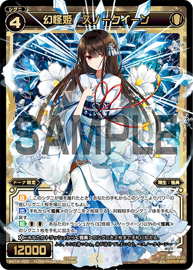

「Lostorage incited WIXOSS」
Column of episode 07
This week's episode is brought to you by:
- Master
- Student
- Evil Bookmaker
- Capable Contract Salesman
- Shitty Siscon
- Rio-chan
- Pure Boy
The above characters! (Although there were really a few more)
Sudden Master-student relationship!!
Master, I'll be under your tutelage!
Do you have someone you look up to?
I wish I had someone I was able to call master.
One day you'll be separated from your best friend thanks to a class change, after all.
Now then, this time the newly proactive Suzuko enters Hanna's tutelage.
Her payment is in sweets and such. Hanna-san has a girly side too.
Damn, that gap paired with a baggy sleeves character...
Hanna begins her lecture.
With a spread of cards before her, Suzuko starts to learn their various uses.
We call that a combo. It will give you an advantage.
Above, when you send Annabelle to the trash, you can then play Odanobu on the field, and use its on-play effect a second time.
Suzuko is able to see the new possibilities in a synergy breaking the bounds of colors despite being a beginner.
Even Hanna is surprised.
Wixoss Eleven
Who was this...
Shirai-kun, finally getting some screentime.
It's clear that he's quite fond of Chinatsu-chan.
However, his memories are slowly being removed from his head as if by an eraser.
Though once you get to be our age, you'll easily forget what people you just met yesterday look like, regardless of whether you play Wixoss.
Especially if you're rich or famous, the worse things you spend your money on the more easily you'll forget and then come up with a convenient explanation.
He can imagine that razor-sharp pass, leading to a shot engulfed in a tornado of flames.
Shou-chan... That never happened...
And then, the three meet.
Um, would you two mind not getting so excited right in front of me?
The pair start talking excitedly about Chii-chan. It doesn't look as though Hanna is amused.
They must have gotten pretty deep into conversation.
A new solicitation method
Please don't use violence
She used the "make her feel good by losing on purpose" technique.
Using Berserk made the feeling of victory even more ecstatic.
Chii-chan, do you want money, are you unable to stop, or can you just not understand anything anymore?
A contract by the name of contract
It makes me feel like it would be signed in blood. Be sure to send it directly to Satomi-san's practice.
This Aoi-san probably uses a blue deck.
Let's move on to the next battle.
Rio vs Narumi
The two meet
Umm, that guy was Aya's what again?
Even I lostorage'd Narumi-san's name for a while.
The other characters are just too distinctive.
No pathetic mercy, okay?
Of course, Aaya!!!
Sure, I'll sign one for you at my house. Let's go together.
After that, nobody saw Narumi-san ever again.
I wonder if they're allowed to play card games in prison.
Let me know if you have any idea.
I use a leave pass! Time for a rematch!
Liver shot!
Whubam!! (Yes, this is exactly what I left for!)
Anyway, let's move on to the analysis.
Two Browcra in his starting hand, not a bad way to begin.
With Browcra's he's able to set Lupinne as a trap.
It's a Signi with a trap effect to nullify one attack.
Coin Bet & Cunning

She turned a held card into a bomb and attacked.That in particular does not quite set off the Cunning ability yet though.
So, let's take a look at how it actually works.
Cunning is an ability that allows you to "turn one card from your hand into a bomb". You can only do this for one card per coin, but because it's possible to activate it on purpose, it can be very useful in the endgame.
The Mama deck "Green Cunning" is on sale 12/15. It's everyone's chance to become Rio-chan.
Mama uses the Wisdom type.
Plus she's a good actor
Not much attention is brought to it, but Mama was created from Rio-chan's memories.
From both that and how she uses Wisdom cards, Rio-chan might actually be pretty smart.
Mama, what's a "shitty siscon"?
Shitty-siscon [kusoshisukon]: Expression meaning the greatest siscon (alternatively worst). Easy to become one when you lose your sister due to Wixoss. One who convinces himself that all girls are his little sister, and is unable to stop himself from loving them.
Don't give up, me!!
Well now, Aaya stepped right on top of that Cunning.
The Cunning bomb, that is. And that is how Narumi-san lost to the girl he projected his sister onto.
Anyway, it's about time for him to go back to his basement
One more match. It's Chinatsu vs Shirai
Yess, I'm Guzuko. I'll be explainingg.
Looks like they met in the park at night
Words aren't necessary at this point. It's Wixoss.
Wait, what the heck is this script...?
She'll let him win... or will she... Chinatsu-san is strong...
Holding onto his suspicions, he continues to Grow.
And Grow and Grow, until Dona is level 4.
"I summon Oddity, Snowqueen!"
Most Oddities have the Layer ability, but Snowqueen is used more as an engine for synergy between other cards.

He hit a Life Burst. Steak's burst can either be used to banish or to Enercharge...
That's right. In the first place, it's up to the player whether to activate a Life Burst effect, so seeing her use one means that she plans to counterattack... Uuu, scary...
The field is as below...
Nurari is banished by Steak's effect...
Dona's Escape kind of looks like what, a chrysalis...?
On his next turn, the unexpected Berserk makes Shou-chan-san cancel Escape, and then the combination of Code Order Wedding and the Arts Dust Chute totally wipes his field...
Uh, Code Order Wedding...? Um, I'm not sure what that card's ability is... I'm shorry! (step step step)
Look forward to next time!
How did you enjoy episode 7, sending you off with Chii-chan's refreshing victory smile?
Today is episode 8, and I hope you like it!